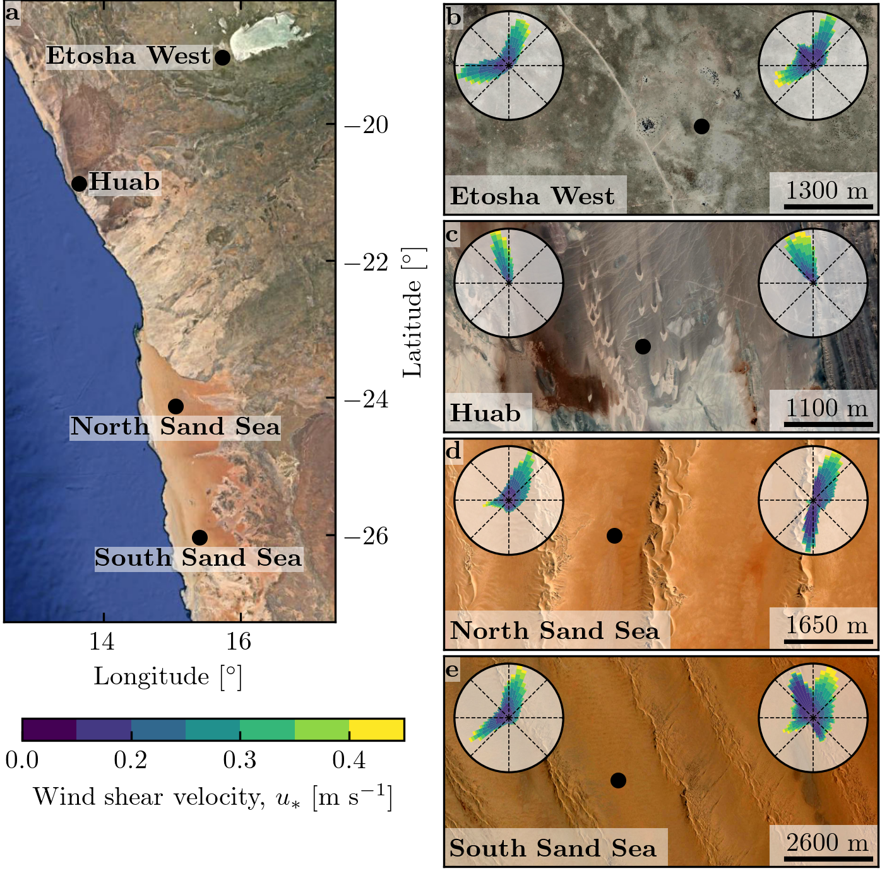

Note
Click here to download the full example code
Figure 1#
import os
import sys
import glob
import numpy as np
from PIL import Image
import matplotlib.pyplot as plt
import matplotlib.gridspec as gridspec
import matplotlib.transforms as mtransforms
sys.path.append('../')
import python_codes.theme as theme
from python_codes.plot_functions import north_arrow
# Loading figure theme
theme.load_style()
# paths
path_images = '../static/images/'
path_savefig = '../Paper/Figures'
path_data = '../static/data/processed_data'
# Loading wind data
Data = np.load(os.path.join(path_data, 'Data_final.npy'), allow_pickle=True).item()
Stations = sorted(Data.keys())
# images
list_images = sorted(glob.glob(os.path.join(path_images, '*+*')))
order_plot = [1, 2, 4, 6, 6]
# fig properties
bins = [0.03, 0.15, 0.2, 0.25, 0.3, 0.35, 0.4]
labels = ['Etosha West', 'Huab', 'North Sand Sea', 'South Sand Sea']
coords_stations = np.array([(-19.034111, 15.737194), (-20.874722, 13.642), (-24.125533, 15.049100), (-26.044083, 15.396972)])
scales = [1300, 1100, 1650, 2600]
bbox = dict(facecolor=(1, 1, 1, 0.5), edgecolor=(1, 1, 1, 0))
bbox2 = dict(facecolor=(1, 1, 1, 0.5), edgecolor=(1, 1, 1, 0), pad=0.25)
numbering = [r'$\quad$\textbf{a}', r'\textbf{b}', r'\textbf{c}', r'\textbf{d}', r'\textbf{e}']
coords_insitu_pix = [(1141, 544), (881, 554), (755, 430), (772, 550)]
# #### Figure
fig = plt.figure(constrained_layout=True,
figsize=(theme.fig_width, 0.66*theme.fig_height_max))
gs = gridspec.GridSpec(3, 2, height_ratios=[2, 0.0001, 1.2], width_ratios=[0.875, 1],
figure=fig)
#
# # map
ax0 = fig.add_subplot(gs[0, 0])
Map = np.array(Image.open(os.path.join(path_images, 'Map.png')))
ax0.imshow(Map[:-104, 642:-791], extent=[12.55, 17.38, -27.27, -18.2])
ax0.set_xlabel(r'Longitude~[$^\circ$]')
ax0.set_ylabel(r'Latitude~[$^\circ$]')
ax0.yaxis.set_label_position('right')
ax0.yaxis.tick_right()
#
ax0.scatter(coords_stations[:, 1], coords_stations[:, 0], s=25, color=theme.color_station_position)
for point, txt in zip(coords_stations, labels):
pad_x, pad_y = 0, 0
if 'Sand Sea' in txt:
ha, va = 'center', 'top'
pad_y = -0.15
elif txt == 'Huab':
ha, va = 'left', 'center'
pad_x = 0.15
else:
ha, va = 'right', 'center'
pad_x = -0.15
ax0.annotate(r'\textbf{' + txt + '}', (point[1] + pad_x, point[0] + pad_y), ha=ha, va=va, color='k', bbox=bbox2)
# north arrow
rect = plt.Rectangle((0.90, 0.83), width=0.1, height=0.4, color='w', alpha=0.4,
transform=ax0.transAxes)
ax0.add_patch(rect)
center = np.array([0.95, 0.86])
length = 0.075
north_arrow(ax0, center, length, width=0.9*length, transform=ax0.transAxes,
color='k', lw=0.05)
ax_list = [ax0]
# right and bottom images
gs_right = gs[:2, -1].subgridspec(2, 1, height_ratios=[1, 1.12])
gs_bottom = gs[-1, :].subgridspec(1, 2)
axe_pos = [gs_right[0], gs_right[1], gs_bottom[0], gs_bottom[1]]
for pos, img_index, num, label in zip(axe_pos, order_plot, numbering[1:], labels):
ax = fig.add_subplot(pos)
ax.imshow(np.array(Image.open(list_images[img_index])))
ax.set_axis_off()
ax.text(0.98, 0.98, label, ha='right', va='top', transform=ax.transAxes)
ax_list.append(ax)
trans = mtransforms.ScaledTranslation(3/72, -3/72, fig.dpi_scale_trans)
for label, ax in zip(numbering, ax_list):
if label != numbering[0]:
ax.text(0.0, 1.0, label, transform=ax.transAxes + trans, va='top')
else:
ax.text(0.0, 1.0, label, transform=ax.transAxes + trans, va='top',
bbox=dict(alpha=0.5, facecolor='w', edgecolor='none', pad=2.0))
plt.savefig(os.path.join(path_savefig, 'Figure1.pdf'), dpi=400)
plt.show()
Total running time of the script: ( 0 minutes 14.654 seconds)